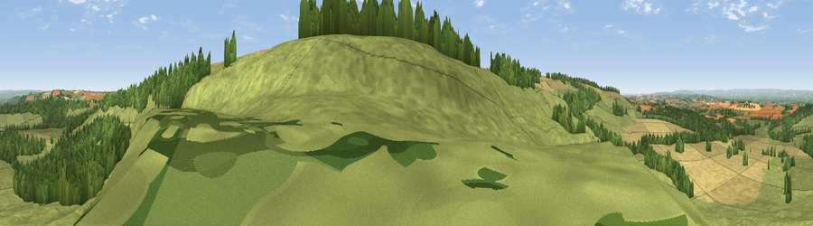

Viewpoint near Birdsall
#10681 in England · top 12% of its area beats it · near BirdsallWhere it is
The exact computed spot (SE 83175 63725). Click the marker for map links.
The view, rendered

A 360° render of this exact spot computed from the terrain model, tree cover and land cover — summer colours, afternoon light, calibrated against photographs of famous viewpoints. Real trees, hedges and buildings will differ in detail.
The panorama
Grey silhouette: terrain skyline in each direction (720 bearings, Earth curvature and refraction included). Dashed green: skyline with trees (+15 m) and buildings (+8 m) as obstacles. Blue strip: how far the ground is visible on each bearing.
Where the view opens
Wedge length = distance to the farthest visible ground on that bearing (vegetation-aware). Rings at 10, 25 and 50 km.
What fills the view
73% grassland · 15% cropland · 12% woodland
Angular shares of the visible panorama (visual magnitude), not map area. Landscape diversity 0.34 (0–1 Shannon).
Key numbers
More beautiful places nearby
The staircase of upgrades: each row has a higher view potential than everything closer. Driving times are estimates from straight-line distance, calibrated against real road routing — check an actual route before setting out.
| Place | Direction | Drive | Score |
|---|---|---|---|
| Viewpoint near Birdsall | N · 2 km | ~6 min | 62.5 |
| Viewpoint near Birdsall | W · 3 km | ~7 min | 71.8 |
| Viewpoint near Leavening | WSW · 4 km | ~9 min | 73.7 |
| Viewpoint near Acklam | SW · 4 km | ~10 min | 73.8 |
| Viewpoint near Ampleforth | NW · 28 km | ~44 min | 76.6 |
| Seamer Beacon | NE · 30 km | ~47 min | 76.9 |
| Olivers Mount | NE · 31 km | ~48 min | 80.3 |
| Viewpoint near Thirlby | WNW · 38 km | ~57 min | 81.5 |
54.06277, -0.73070 · source: screening · position refined by local search. Computed location — check access rights before visiting.